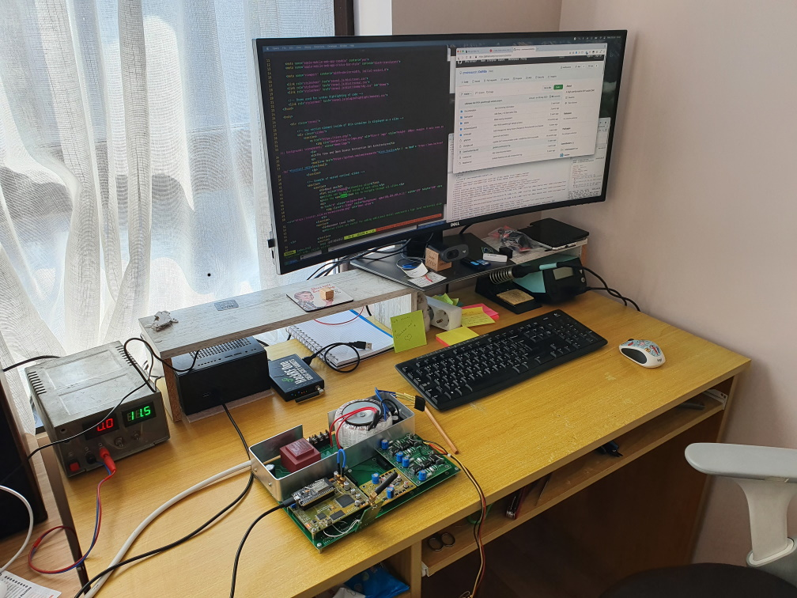
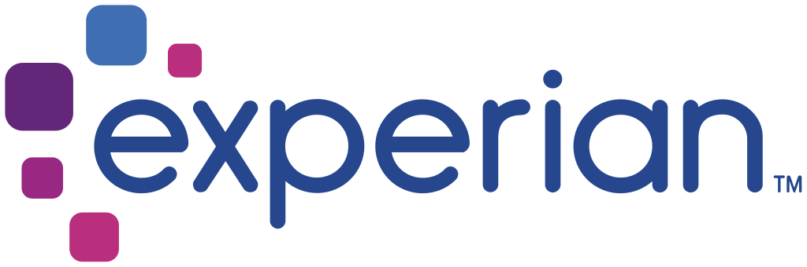
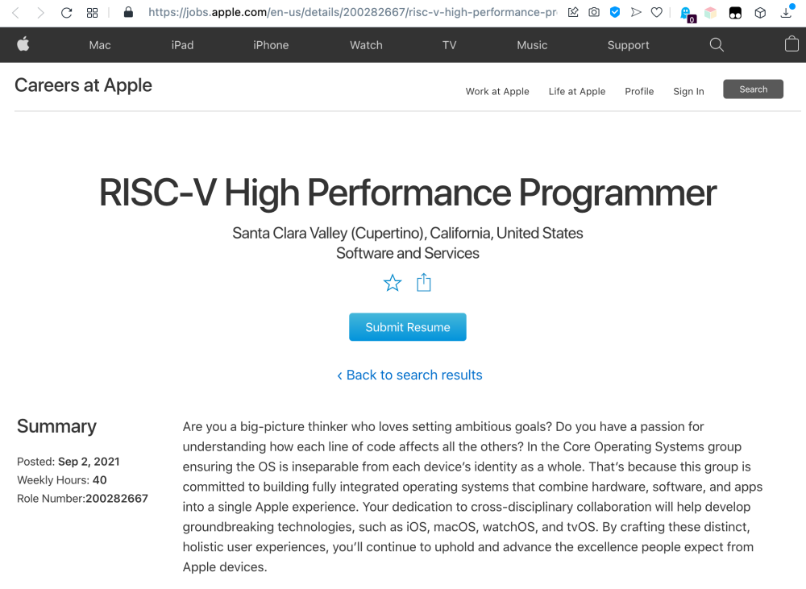

The Free and Open Source Instruction Set Architecture
About me
(shameless plug)



Why do I care about Risc-V?
- Excited
- Believe there is a great potential
- Interesting for others
Objective for today
- Get you interested
- Overview of Risc-V
- Get you scared
- Technical details
Definitions
- Processor
- Microcontroller
- FPGA
- ASIC
- RTL
ISA
Instruction Set Architecture
(Simplification)The physical equivalent of an API

Popular ones
- Intel/AMD x86(64)
- ARM
- MIPS, PowerPC, m68k, etc.
RISC vs CISC
An ISA does not matter anymore!
(...except when it does)What is RISC-V
A Free and Open ISA:“...Driven through open collaboration...Enabling freedom of design across all domains and industries
...Cementing the strategic foundation of semiconductors”
In a little bit more details:
- A set of specifications
- ... targeting 32, 64 and 128-bit processors
- ... at different performance/complexity/cost points
- ... allowing great extensibility and flexibility
More importantly:
- A vibrant open community
- Backed by commercial vendors
- Overseen by an Non-Profit organization to ensure consistency
...but also:
A growing range of actual devices that you can buy and use today.RISC-V Implementations: RTL/FPGA
RISC-V Foudation Github lists over 100+ implementation. Notable mentions:- Western Digital SweRV: A set of cores used by Western Digital in their products, open-sourced
- DarkRISCV: BSD-Licensed, implemented in one night, easy to understand, multicore, etc.
- PicoSoC: An open licensed SoC with commercial support
RISC-V Implementations: Devices
A number of companies offer physical devices:- SiFive
- NXP
- Allwinner
- GreenWave
- ... and growing
Why Open source / Open Hardware: Innovation
Allows you to build great products that are otherwise impossible, combining a CPU/MCU with custom blocks/accelerators.Why Open source / Open Hardware: Flexibility
Start/prototype with an FPGA, go up or down based on complexity, move to an ASIC if/when needed.Why Open source / Open Hardware: Future Proofing
Ability to quickly adapt to changes if needed - e.g. semiconductor supply chrisis vs Tesla.Why Open source / Open Hardware: Security
Be able to inspect/audit the system down to transistor/gate level.Why Open source / Open Hardware: Learning
Designing a system from the grounds-up is the best way to understand it... have lots of fun and experimentation...
... and the usual "What the..." moments as well
Random facts:
I've used RISC-V cores in two (semi)commercial products already and love itThere are open-source projects like SymbiFlow that enable an end-to-end open toolset, when targeting FPGAs like ones from Lattice Semiconductor
Random facts:
Manufacturing an ASIC is (maybe) not that off-the-limits.Anecdotal evidence is a design on 130nm process with ~1.5m transistors can be manufactured for less than 100k used. And moving to 180nm (Pentium III-era process) - for less than 10k USD
Predictions:
- In 10 years, RISC-V will be the preferred platform for smart/IoT devices
- In 5 years, a hyperscaler(My bet - Microsoft) will create a high-performance RISC-V chip, rivaling best ones from Intel, AMD, IBM and ARM. /li>
Predictions:
Apple has some interest too: